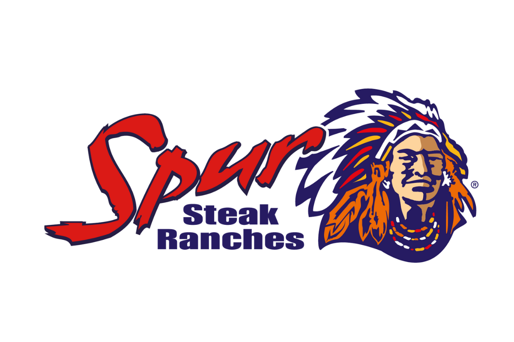
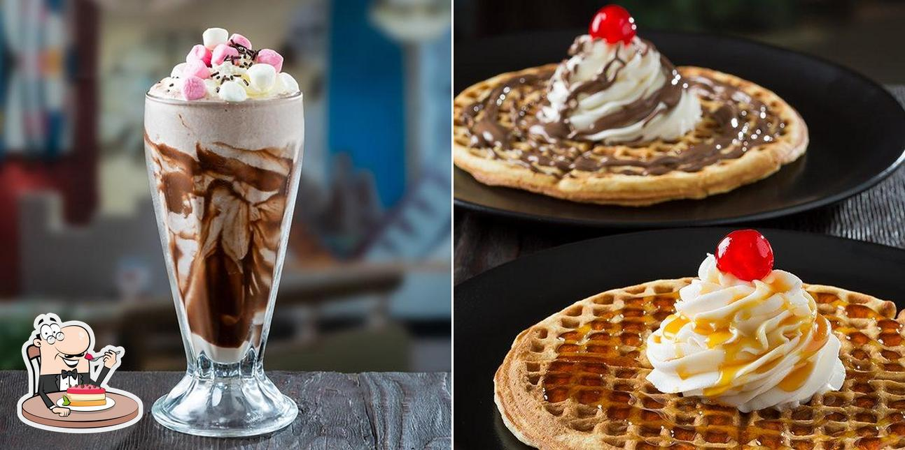

SPUR
Spur Corporation (doing business as Spur Steak Ranches) (JSE: SUR) is a steakhouse franchise restaurant chain originating from South Africa with a focus on family dining. The head office of Spur Corporation is situated in Century City, Cape Town. Although the founding and flagship brand is the Spur steakhouse restaurants, the company owns a number of other, predominantly South African, restaurant brands. Spur Steak Ranches is a themed South African family favourite and is fondly known as "the official restaurant of the South African family"; as such, most Spur restaurants include a children's play area.
